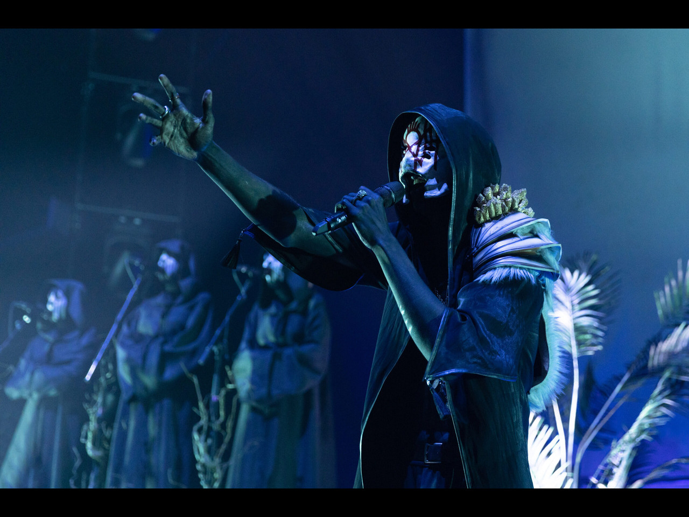
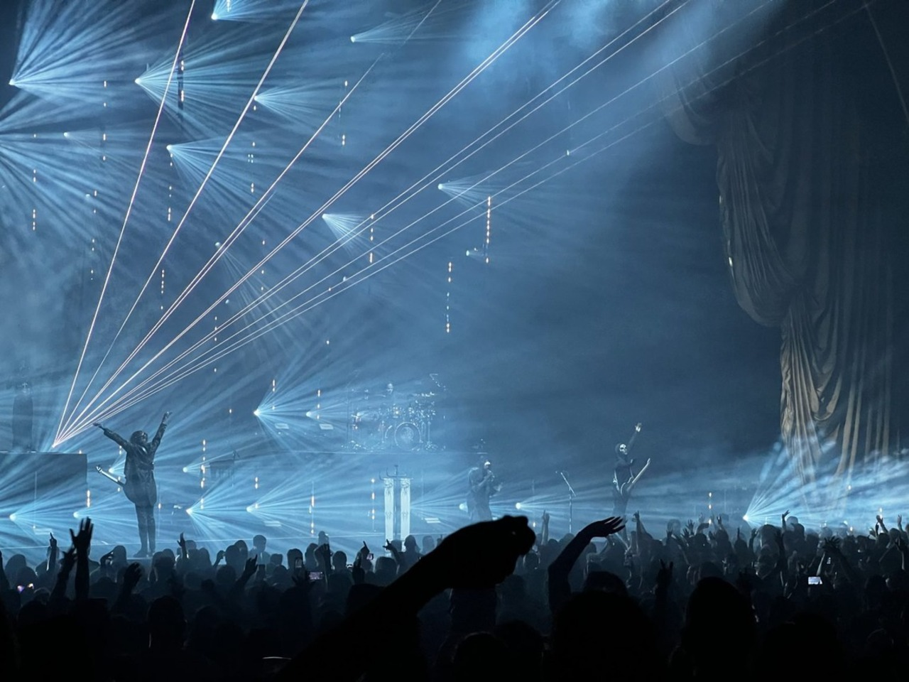

Entering the World of Sleep Token
Step into the odd universe of Sleep Token, a secret society with hidden identities and unrelenting dedication. Transporting listeners on a one-of-a-kind and captivating musical trip, their music, like a plunge into the deepest currents, ebbs and flows with raw passion and mystical soundscapes. More than just a band, Sleep Token offers an experience, a study of intricate ideas that resonate like the never-ending power of water, a source of life and an unfathomable depth.


What is Sleep Token?
A hidden group, Sleep Token speaks in eerie tunes and cryptic language. Presented with raw emotional intensity and genre-bending sound, their music explores topics of connection, devotion, and the human condition.
Explore Further..
Discover their current collection of work Music page.
Witness the power of their gatherings on the Worship page.
Unravel the identities behind the masks on the Vessels page.